Family Dentistry in West Plano
A Family Dentist in Plano, TX
Where You Can Finally Relax
A boutique, high-touch practice on Coit Road. Cleanings, fillings, braces and implants for every age, in one office.
- 4.9 · over 1,000 Google reviews
- Accepting new patients
- Mon–Fri, 7AM–3PM
- Free parking out front
The real reason
Most people put off the dentist.
Usually it is not about teeth.
If the thought of visiting the dentist makes your heart race, you are not alone, and at Vitality Dental you have absolutely nothing to be ashamed of.
You deserve a healthy smile, regardless of how long it has been since your last visit.
“Is it possible to actually enjoy the dentist?”Our patients say yes.
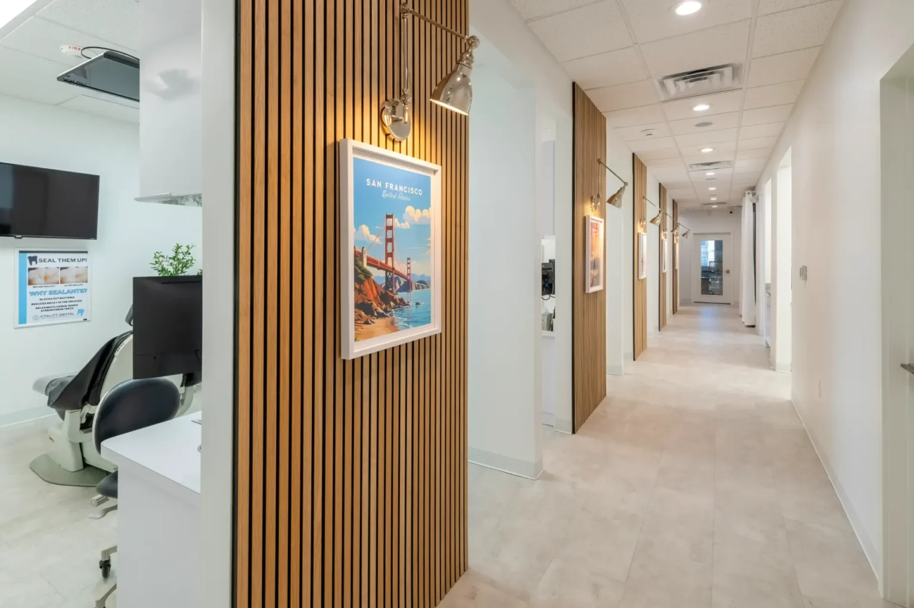
Accreditations and a patient review
I came in with an extreme fear and I’ve gone from getting laughing gas to just gel on gums for cleaning. Everyone from front office to dental tech to doctors are absolutely amazing.
Credentials & affiliations
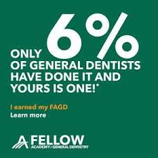
- American Dental Association
- Texas Dental Association
- American Academy of Facial Esthetics
CareCredit and flexible payment options. Most major PPO plans accepted.
Your first visit
What actually happens when you come in
No surprises and no lecture. Here is the whole visit, start to finish.
- 1
Book in a minute
Call or book online. Tell us you are nervous and we note it before you arrive.
- 2
We check your benefits
We verify your insurance ahead of time, so the cost conversation happens before the chair.
- 3
Arrive and settle
Free parking right outside Suite 106, short waits, and bring someone with you if you like.
- 4
A proper look
Digital X-rays, and a 3D scan where it helps, so you see exactly what we see.
- 5
Options in plain English
What we found, what it costs, and what happens if you wait. You decide, at your pace.
- 6
Treat, or come back
Same-day treatment if you want it, sedation if you need it, or a plan for another day.
We cater to dental phobia.
This is a judgment-free zone.
We offer multiple levels of sedation, from nitrous oxide to oral sedation, so a stressful procedure does not have to feel like one.
Whether you are a Plano Senior High parent needing a quick checkup, or you have been putting off a procedure for years, Dr. Andrew Kung and his team are ready to listen without judgment.
“If you’re afraid of visiting the dentist, you have absolutely nothing to be ashamed of. We are here to empower you, not lecture you.”
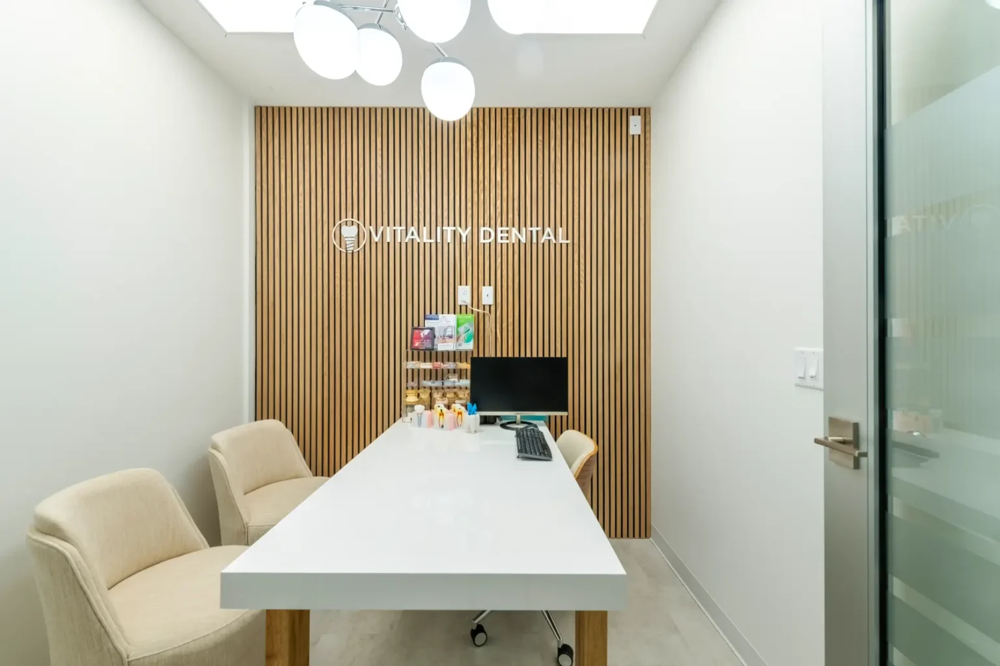
4.9 · over 1,000 Google reviews
Comprehensive services under one roof
From your child’s first visit to senior care
Stop driving all over North Texas for specialists. We handle complex care right here in West Plano.
-
Emergency Dentistry
Toothaches don’t wait for business hours. Same-day appointments when you are in pain.
-
Restorative & Implant Dentistry
3D cone beam planning for implants, All on 4 and implant dentures.
-
Cosmetic Dentistry
Veneers to Invisalign, at the intersection of science and artistry.
-
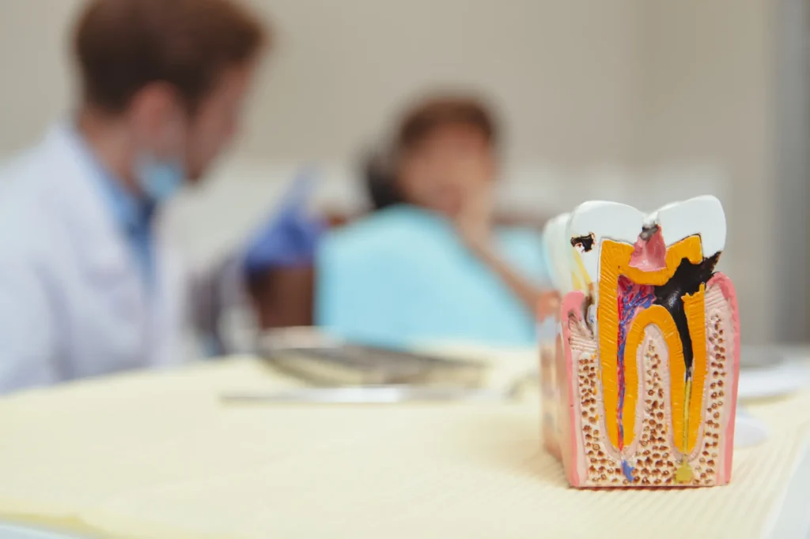
Family & Preventive Dentistry
From your child’s first visit to senior care, stopping problems before they start.
-
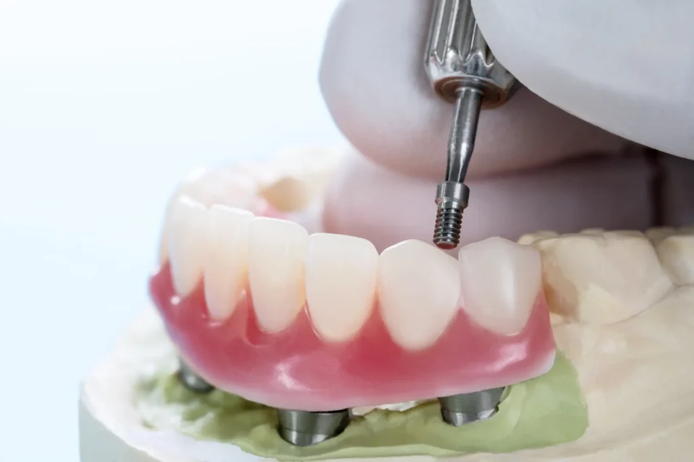
All on 4 Implants -
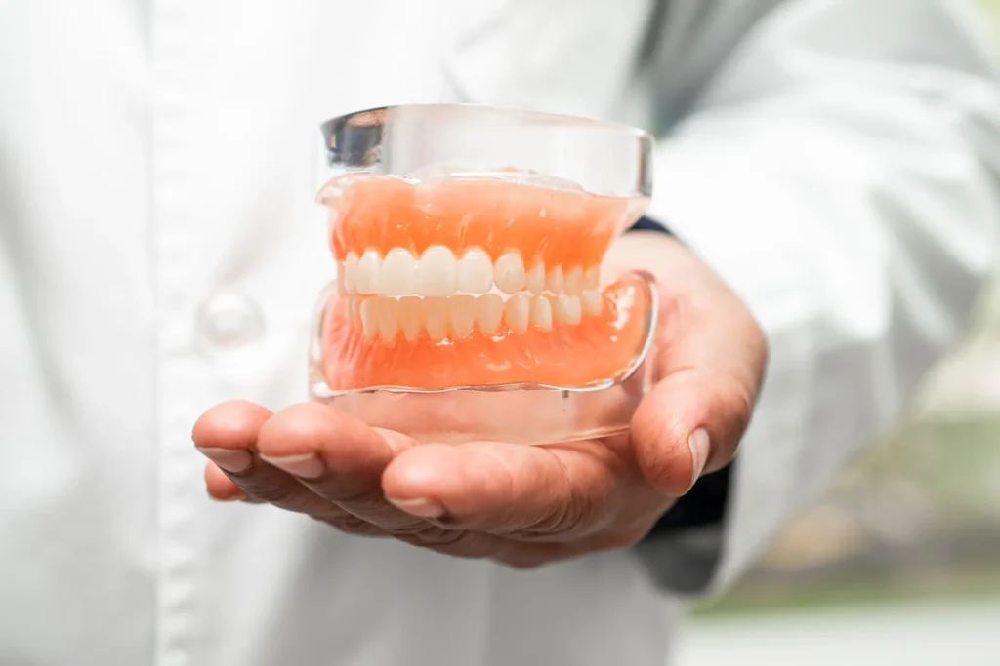
Implant Dentures - Cosmetic Dentistry
-
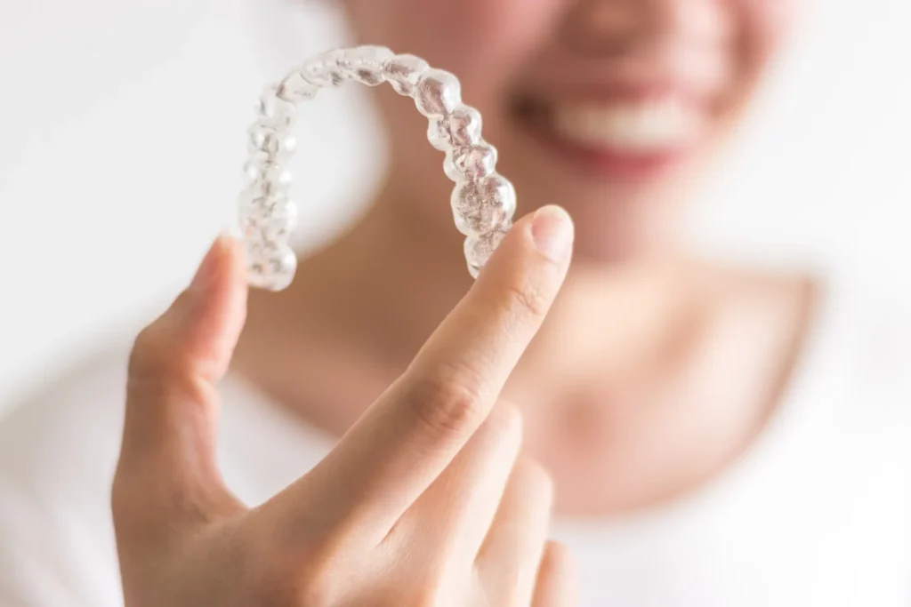
Invisalign - Orthodontics & Braces
-
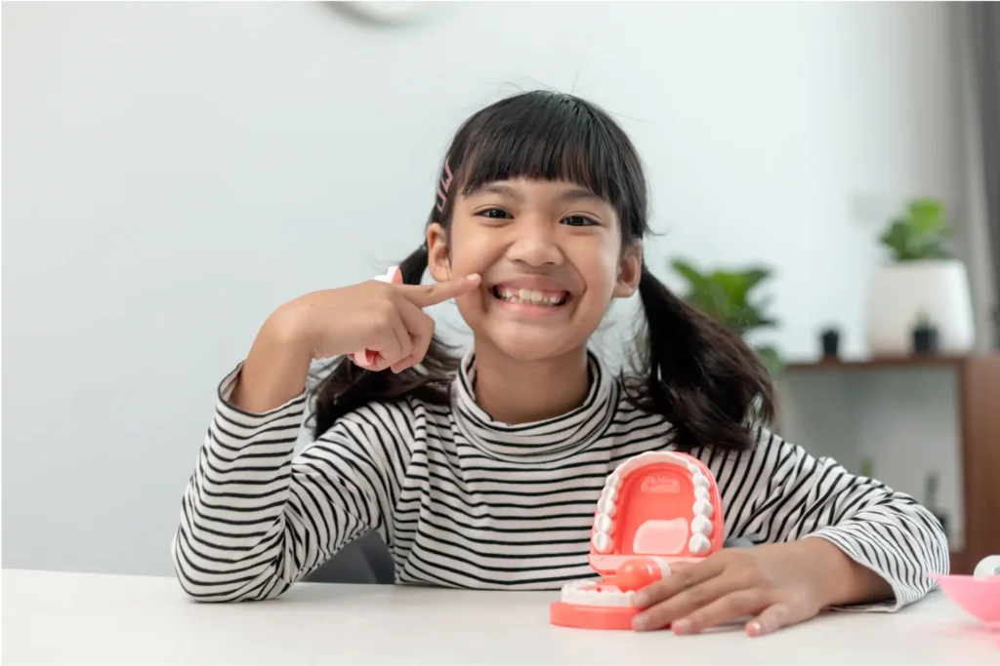
Children’s Dentistry - Preventive Dentistry
- Gum Disease Treatment
-
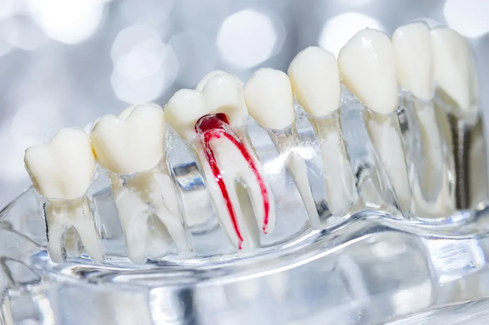
Root Canal Therapy - Sedation Dentistry
-
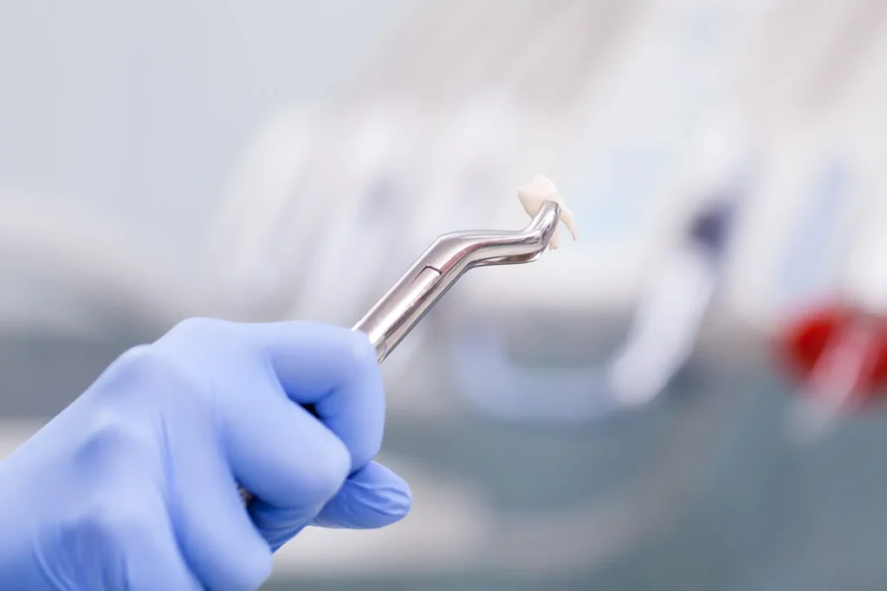
Tooth Extractions - Wisdom Teeth Removal
Reasons people come in
If any of this sounds familiar, we can help
Something hurts
- A tooth that aches or throbs
- Pain when you bite down
- Sensitivity to hot or cold
- A chipped or broken tooth
- A lost filling or crown
- Sore or bleeding gums
Something bothers you
- Missing teeth, or gaps you hide
- Crowded or crooked teeth
- Staining and discolouration
- Dentures that no longer fit
- Wisdom teeth coming through
- It has simply been a long time
Patients love it here
Why Plano trusts Vitality Dental
“Is it possible to actually enjoy the dentist?” Our patients say yes.
4.9 · over 1,000 Google reviews
-
Awesome team, they are so helpful and explain everything in great detail. I’m terrified of dental procedures and everyone from the dentists to the hygienists have been very patient and gentle.
Cara Weatherby Google review
-
Dr. Kung never rushes and is always patient with all my questions, providing me with all kinds of options and recommendations for my concerns. He is professional, knowledgeable and caring. I trust Dr. Kung a lot.
Laura Google review
-
Vitality Dental is the BEST in DFW. I came in with an extreme fear and I’ve gone from getting laughing gas to just gel on gums for cleaning. Everyone from front office to dental tech to doctors are absolutely amazing. I tell all my friends.
Michelle Moorman Google review
-
My family and I have been going to Vitality Dental for three years now. The office is clean and welcoming, and booking appointments is easy with little to no wait time. We always feel well taken care of.
Cherie C Google review
-
Such a great experience. The entire team is so friendly and the dental care is outstanding!
Stephanie Miner Google review
-
My first visit to the clinic, Dr. Gino and the entire Vitality Dental Team were awesome! Professional. Informative. Walked me every step of the way of my treatment. Great for the whole family! Highly recommend!
Ron Silvestre Google review
-
Exceptional team at Vitality Dental. The staff is so friendly and attentive. They make a point to ensure you’re comfortable throughout the whole process. I had to get two fillings today and aside from the numbing shots I felt absolutely 0 pain.
Aubrey Schmidt Google review
Patients in their own words
-
Matt
-
Laura L.
-
Patient story
-
Patient story
-
Patient story
Before & after
Real patients, real smiles
We are helping our patients restore their smiles and their confidence. Drag the handle to see the change.
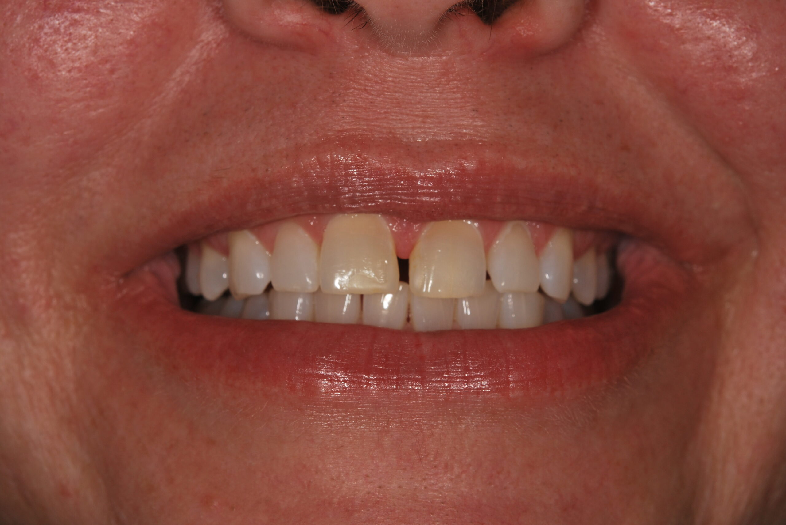
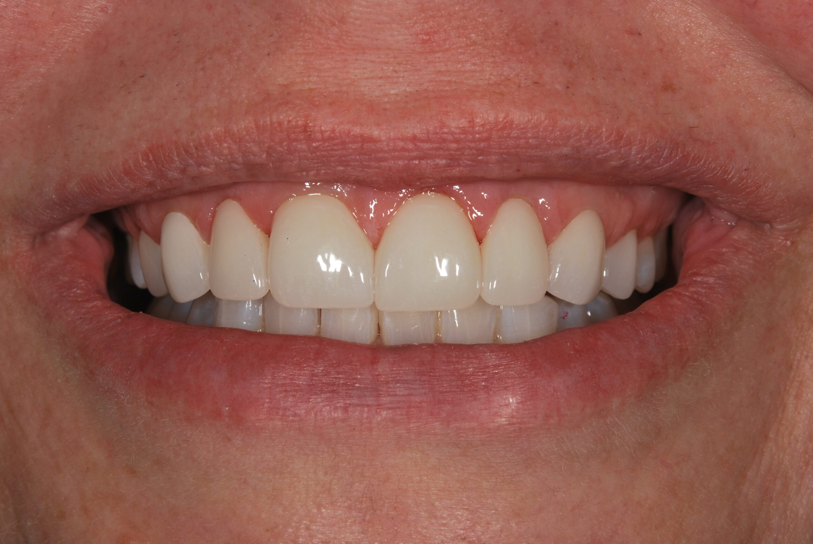
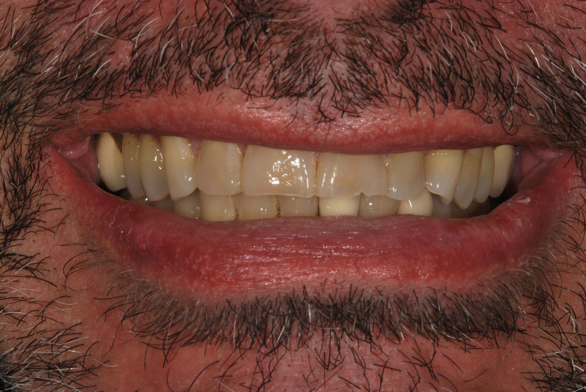
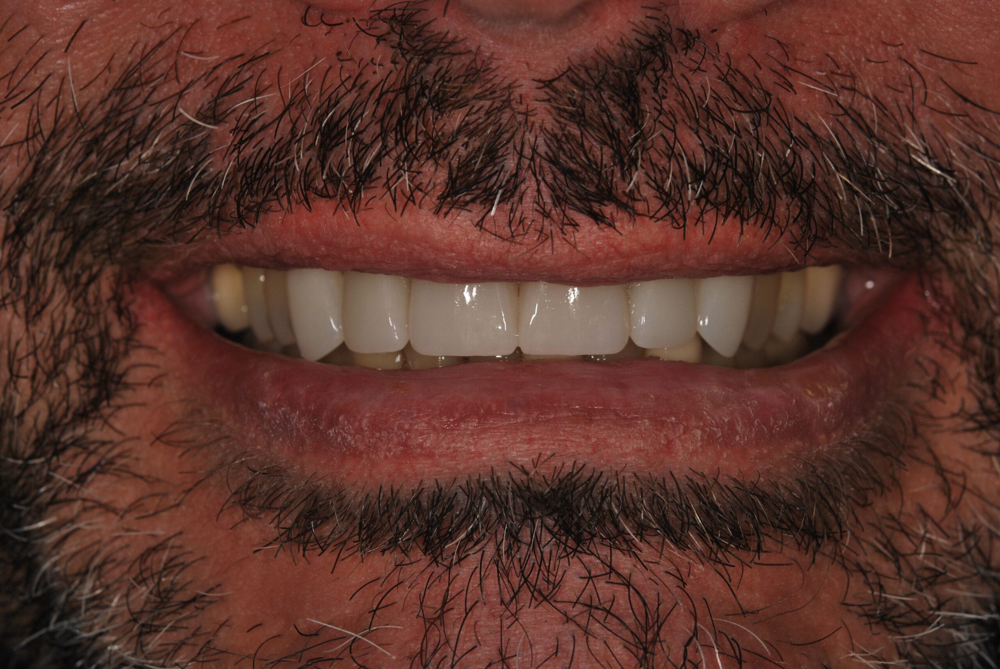
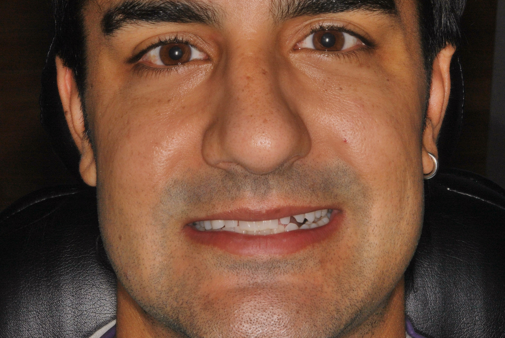
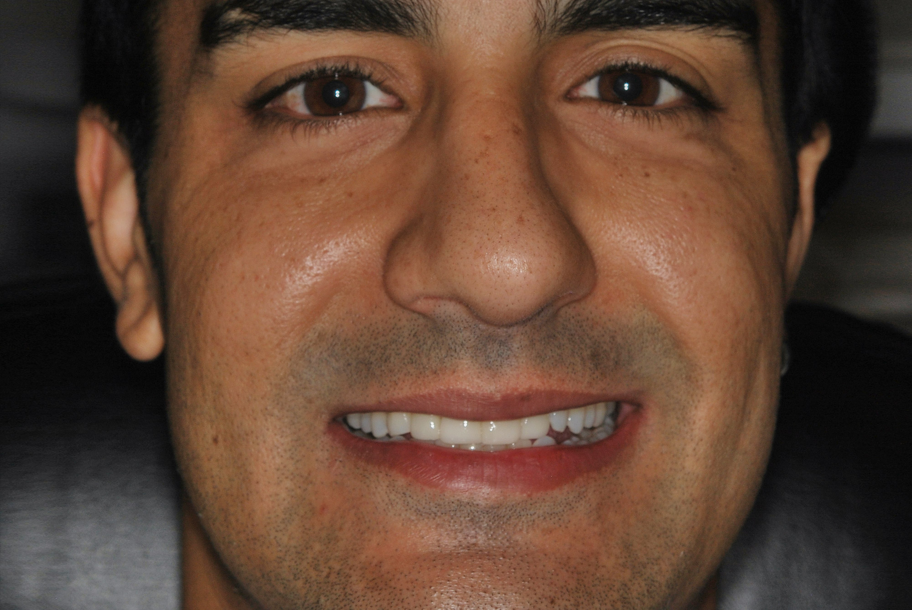
Emergency dentistry
Toothaches don’t wait for business hours
If you are in pain, we prioritize getting you out of it. Whether it is a broken tooth, severe pain or a dental injury, we offer same-day emergency appointments during office hours, Monday to Friday, 7AM to 3PM.
Common emergencies we handle
- Severe toothaches or abscesses
- Knocked-out or broken teeth
- Lost fillings or crowns
- Soft tissue injuries
Life-threatening? Uncontrolled bleeding, swelling that affects breathing or swallowing, or a facial injury means 911 or the nearest emergency room, not a dental office.
Financial peace of mind
No insurance? No problem.
We believe top-tier dental care should be within reach. Our team verifies your coverage and maximizes your benefits before your appointment, so there are no surprises in the chair.
We accept
- HSA and FSA cards
- Most major PPO dental insurance plans
- CareCredit and flexible payment options
Complimentary insurance benefits check. We deal with the insurance companies so you don’t have to.
In-house dental plan
For patients without insurance:
- No deductibles
- No yearly maximums
- No administrative forms
- No pre-authorization required
- No waiting periods, immediate eligibility
- Discounts on preventive, restorative and cosmetic services
-
$34/month
Adult Wellness Plan
- 2 preventive cleanings
- All exams necessary
- All X-rays necessary
- Annual fluoride
- Annual oral cancer screening
- Annual periodontal screening
- 15% off additional cleanings
-
$29/month
Child Wellness Plan
Children under 12 years
- 2 preventive cleanings
- All exams necessary
- All X-rays necessary
- Annual fluoride
- Annual oral cancer screening
- Annual periodontal screening
- 15% off additional cleanings
-
$7/month
Treatment Add-on
Add-on or standalone plan
- 15% off all procedures
In the operatory
Technology that respects your time and comfort
We don’t use technology to look impressive. We use it to make your visit faster and less painful.
-
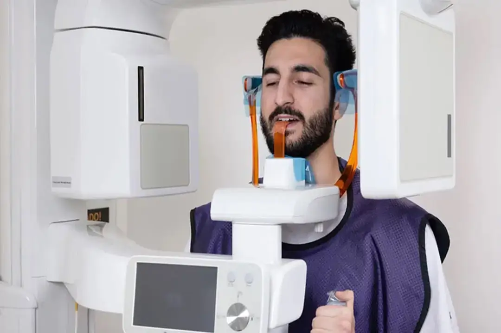
3D Cone Beam Imaging
Shows us what 2D X-rays miss, which is what makes accurate dental implant placement possible.
-
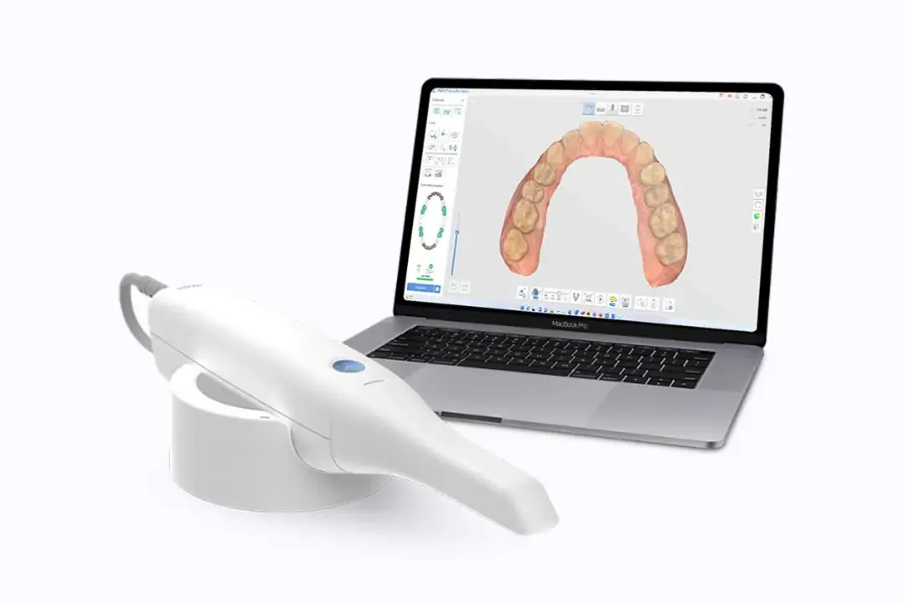
Digital X-Rays & 3D Intraoral Scanner
You see exactly what we see, with faster diagnostics and less radiation exposure.
-
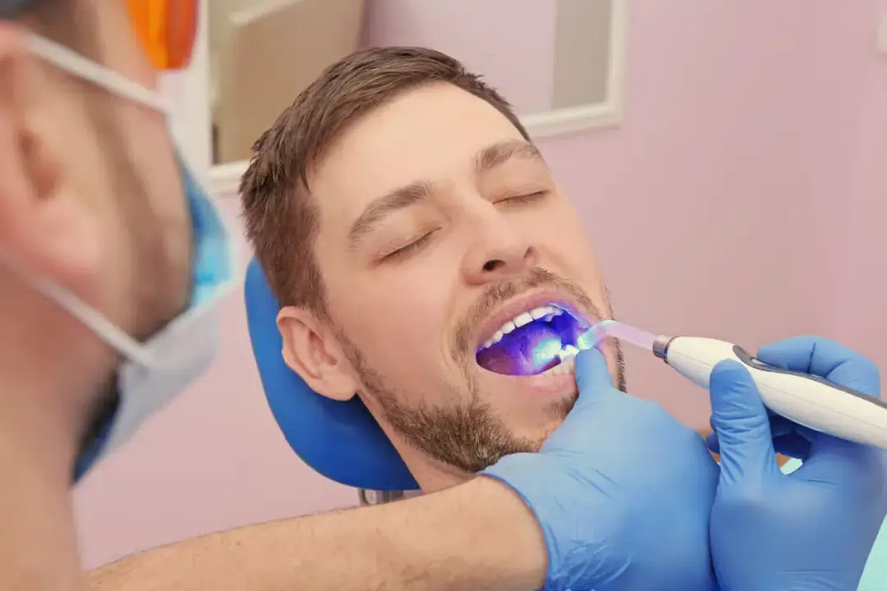
Soft-Tissue Lasers
Quicker healing, less bleeding and reduced discomfort during procedures.
-
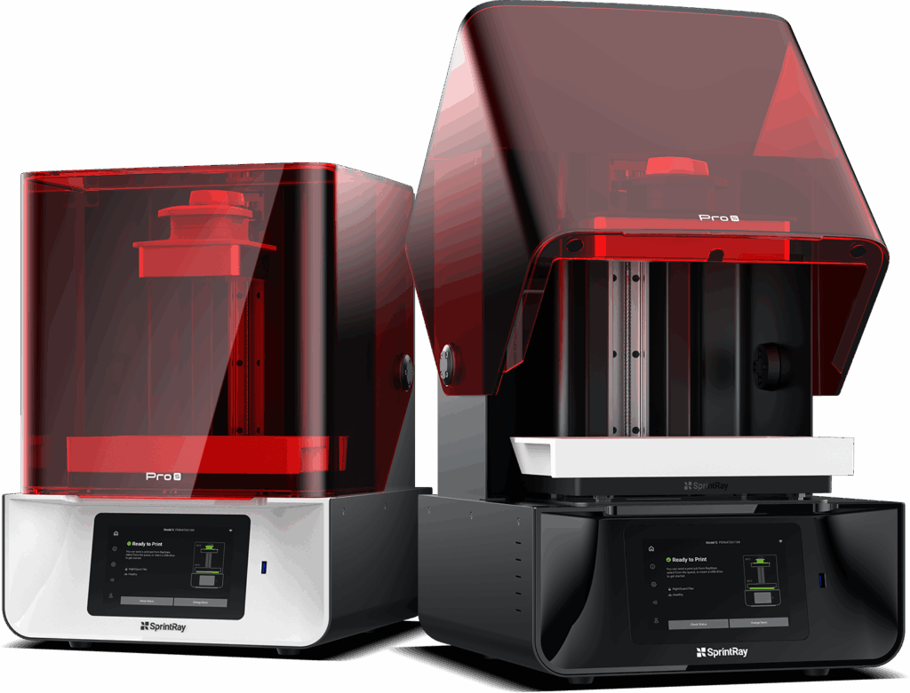
In-House 3D Printing
Appliances and guides produced on site, which keeps more of your treatment under one roof.
-
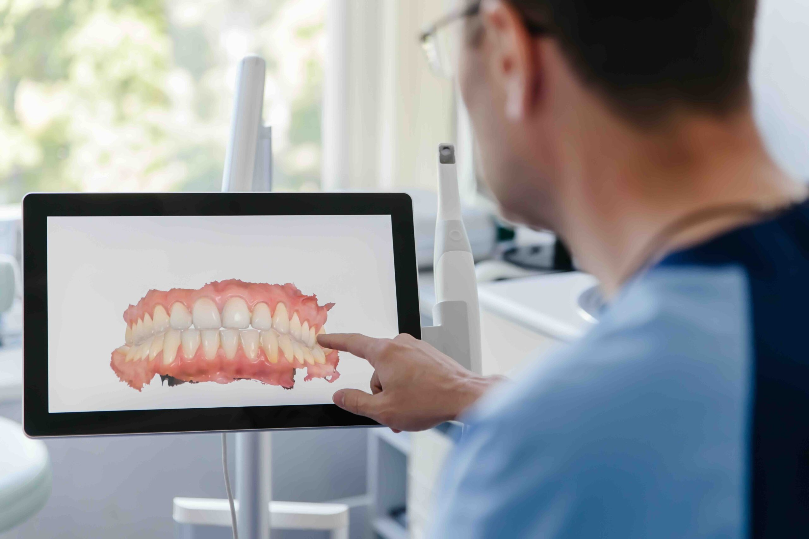
Digital Workflow
Digital records and imaging throughout, so your visit moves faster and repeats less.
Dr. Kung’s local insight
Is it a cavity, or “Cedar Fever”?
Living in North Texas comes with unique challenges for your mouth.
Every year between December and February, we see dozens of patients rush in convinced they have a dying tooth in the upper back of their mouth. The real culprit? Mountain Cedar pollen.
Your upper molar roots sit right below your maxillary sinuses. When Cedar Fever inflames those sinuses, the pressure pushes down on the nerves of your teeth and mimics a toothache.
Pro tip: if your upper teeth hurt on both sides and you are congested, it might be allergies. If the pain is isolated to one specific tooth, call us at (972) 964-3800. That can be an infection needing urgent care.
The people
About Dr. Andrew Kung & the Vitality Dental team
Dr. Andrew Kung is a Plano native who believes dentistry is never only about teeth. After personally undergoing extensive treatment to transform his own smile, he understands dental fear and what a healthy smile changes.
He is joined by Dr. David Burkett and Dr. Brian Son, a team combining decades of experience with current dental technology.
-
Dr. Andrew Kung
A proud graduate of Plano Senior High. Fellow of the Academy of General Dentistry, earned by only 6% of general dentists, and Fellow of the International Congress of Oral Implantologists.
-
Dr. David Burkett
Part of the Vitality Dental doctor team on Coit Road.
-
Dr. Brian Son
Part of the Vitality Dental doctor team on Coit Road.
A “homegrown” Plano native
Dr. Kung isn’t only a dentist in Plano, he is part of this community’s fabric. Whether he is volunteering with the Texas Mission of Mercy or hosting the practice’s annual Santa and Mrs. Claus community event, he treats his neighbors like family.
Professional affiliations
American Dental Association · Texas Dental Association · Academy of General Dentistry (Fellow) · International Congress of Oral Implantologists (Fellow) · American Academy of Facial Esthetics
Finding us
How to find Vitality Dental
We are right on Coit Road, tucked into the southwest corner of the Coit and 15th Street intersection, inside the North Coit Medical Plaza.
- From George Bush Turnpike
- Head north on Coit Road. We will be on your left (west) side just before you hit the light at 15th Street.
- Landmark navigation
- If you pass Plano Family Medicine you are right on target, we are neighbors. If you see Cheyenne Park or the zTAO Marketplace, you have gone a block too far south.
- Parking
- No garages, no meters. There is free surface parking right in front of Suite 106.
Vitality Dental
1220 Coit Rd #106
Plano, TX 75075
Phone (972) 964-3800
Hours Monday to Friday, 7AM to 3PM
Saturday & Sunday closed
Nearby communities we serve
- West Plano
- East Plano
- Parker
- Willow Bend
- Legacy West
- Medical City Plano area
- Preston Road corridor
Common questions
Questions about our Plano dental office
Do you offer sedation for anxious patients?
Absolutely. We offer different levels of sedation to help our patients feel comfortable and relaxed, including nitrous oxide (laughing gas) and oral sedation. If you are afraid of visiting the dentist, you have absolutely nothing to be ashamed of.
How much does it cost to visit a dentist in Plano without insurance?
Costs vary depending on the service, and our in-house adult wellness plan is $34 a month and the child plan is $29. We offer complimentary consultations where we can give you transparent pricing for what you actually need. New patients are always welcome.
Do you speak languages other than English?
Yes! At Vitality Dental, we speak your language, including English, Japanese, Chinese, and Spanish. Dr. Kung is fluent in Mandarin, and our team is trained to ensure every patient feels understood and empowered on their oral health journey.
What should I do if I have a dental emergency on the weekend?
If it is life-threatening, call 911 or go to the nearest emergency room. That includes uncontrolled bleeding, swelling that affects your breathing or swallowing, or a facial injury.
For dental pain, a knocked-out tooth or a lost crown, call our office at (972) 964-3800. We prioritize emergency cases and offer same-day appointments whenever possible. Office hours are Monday to Friday, 7AM to 3PM.
Are you accepting new patients?
Yes. New patients and emergency appointments are always welcome. We have gone out of our way to make the office a place you can be comfortable in, with short wait times and a family-like atmosphere.
Patient education
Answers to what people actually ask us
-
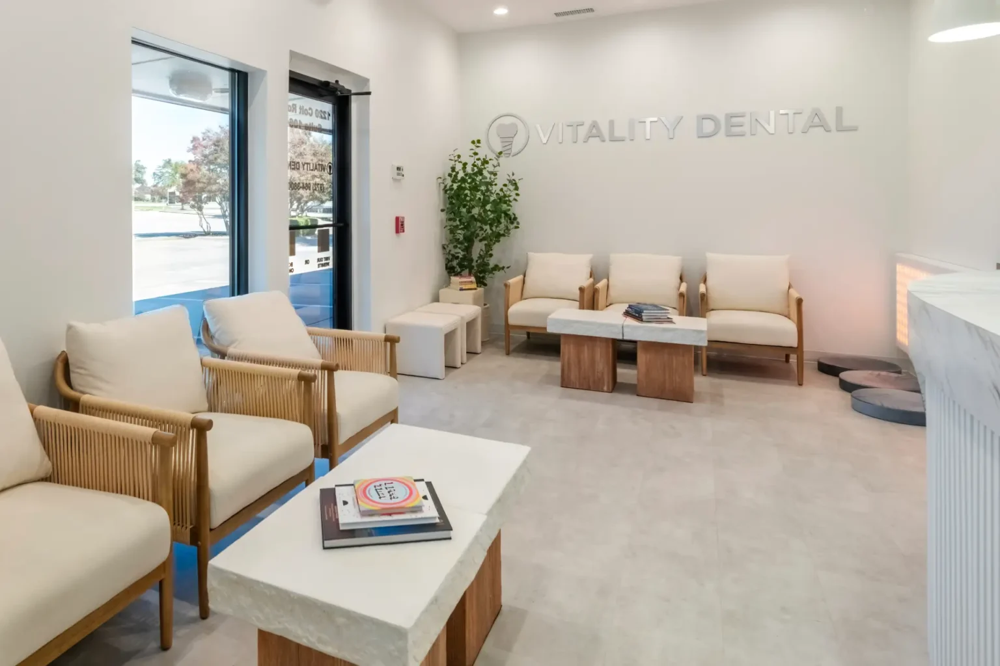
Is it a cavity, or Cedar Fever?
Between December and February, upper-molar pain in North Texas is often sinus pressure rather than a dying tooth. How to tell the difference.
-
What sedation actually feels like
Nitrous oxide and oral sedation without the jargon, including what you will remember afterwards and whether you need someone to drive you home.
-
Going to the dentist without insurance
What care costs in Plano when you are paying out of pocket, and how an in-house plan changes the arithmetic.
Book your appointment
Ready when you are
Same-day emergency appointments, complimentary consultations and an adult in-house plan at $34 a month. Call the office or book online and we will take it from there.